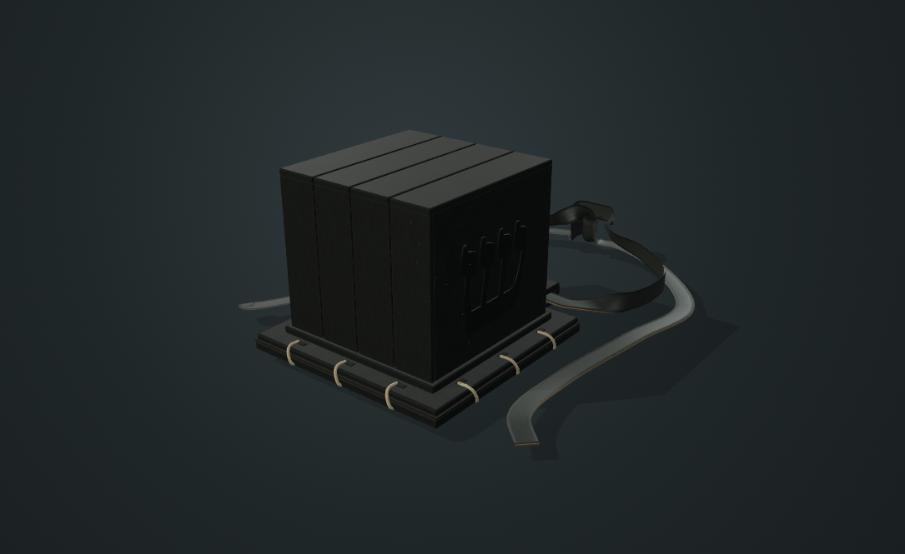
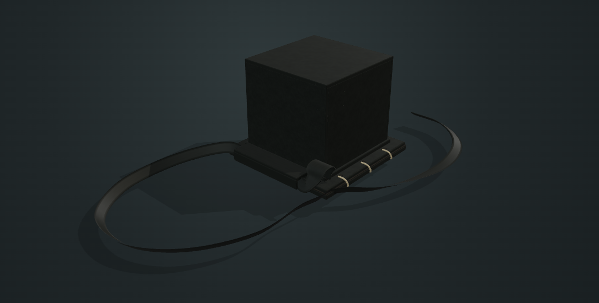

Explore · Rotate · Discover
3D Torah Artifacts
A closer look at objects of Jewish life. Choose a study, turn it in your hands, and explore the details through interactive models and primary sources.
Choose an artifact
02 studies · review candidate
Interactive study · v0.10.0-alpha.2 research preview
Tefillin Shel Rosh
תפילין של ראשHighlight each component as you learn its meaning, discover the laws received at Sinai, and explore the four chambers, parchments and both knot studies.
12 selectable topicsExploded & cutaway viewsReceived law & primary sources
Explore the model →
Interactive study · v0.2.0-alpha.2 research preview
Tefillin Shel Yad
תפילין של ידExplore one chamber and one parchment containing four passages. Highlight the yud fold study, strap loop, base and fine wrapping as you learn their meaning.
9 selectable topicsOne chamber · one scrollReceived law & primary sources
Explore the model →